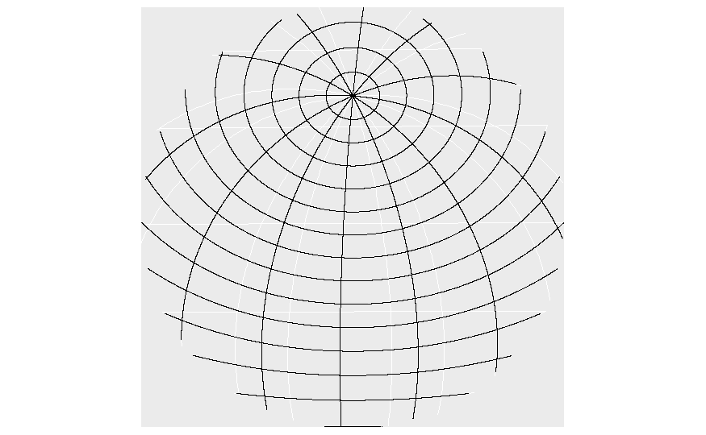
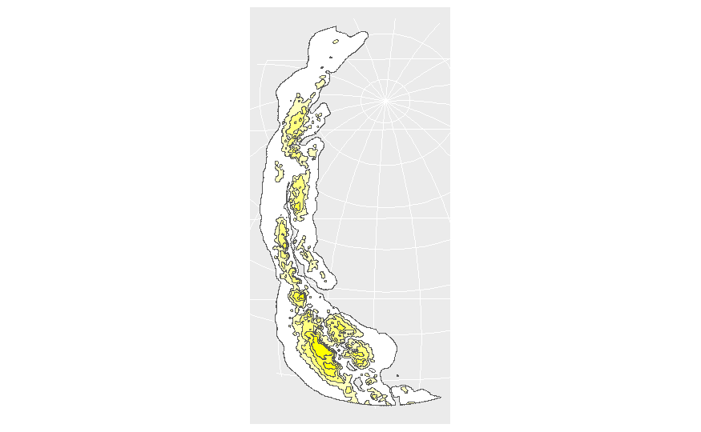
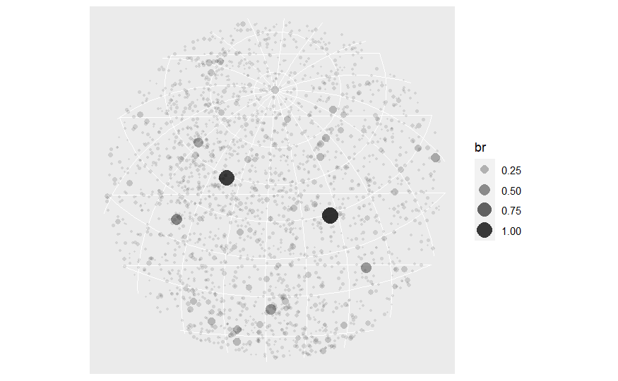
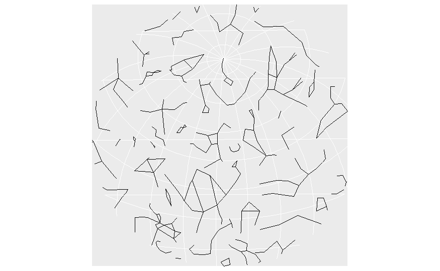
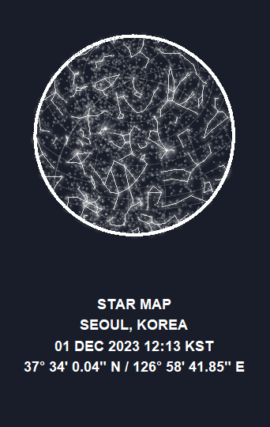

#| code-fold: true
#| code-summary: "Plot Function for Star Map"
ggplot() +
# Graticules
geom_sf(data = grat_end, color = "grey60", linewidth = 0.25, alpha = 0.3) +
# A blurry Milky Way
with_blur(
geom_sf(
data = mw_end, aes(fill = fill), alpha = 0.1, color = NA,
show.legend = FALSE
),
sigma = 8
) +
scale_fill_identity() +
# Glowing stars
geom_glowpoint(
data = stars_end, aes(
alpha = br, size =
br, geometry = geometry
),
color = "white", show.legend = FALSE, stat = "sf_coordinates"
) +
scale_size_continuous(range = c(0.05, 0.75)) +
scale_alpha_continuous(range = c(0.1, 0.5)) +
# Glowing constellations
geom_glowpath(
data = const_end_lines, aes(X, Y, group = interaction(L1, L2)),
color = "white", size = 0.5, alpha =0.8, shadowsize = 0.4, shadowalpha = 0.01,
shadowcolor = "white", linejoin = "round", lineend = "round"
) +
# Border of the sphere
geom_sf(data = hemisphere_sf, fill = NA, color = "white", linewidth = 1.25) +
# Caption
labs(caption = caption) +
# And end with theming
theme_void() +
theme(
text = element_text(colour = "white"),
panel.border = element_blank(),
plot.background = element_rect(fill = "#191d29", color = "#191d29"),
plot.margin = margin(20, 20, 20, 20),
plot.caption = element_text(
hjust = 0.5, face = "bold",
size = rel(1),
lineheight = rel(1.2),
margin = margin(t = 40, b = 20)
)
)🌠 Constellation Maps
INFO 526 - Project Final
Abstract
This project aims to develop a Shiny app that generates an interactive constellation maps, leveraging computational and visualization techniques. Utilizing the datasets are available in GeoJSON (*.geojson) and GeoPackage (*.gpkg) formats, we will be using three of the available data: the milkyway, the constellation lines, and the stars. The primary objective is to prioritize accessibility and personalization by allowing users to input specific geographic locations and time, resulting in contextually relevant and visually captivating constellation maps. The significance of this project is to enhance the appeal and educational value of stargazing by tailoring the experience through diverse elements such as color schemes, map locations, time zones, and latitude/longitude inputs. Furthermore, the app will be crafted with a user-friendly interface, aiming for inclusivity across diverse backgrounds and levels of astronomical expertise.
Introduction
Everyone has had the experience of wanting to know the name of the constellation currently visible in the sky. At least once, we’ve all heard the myths and stories of how constellations were named when we were young. Also, we might want to explore the sky in places or time zones where we have not experienced before.
So, how can we observe the skies in different places and time zones? That is the main focus of this project. By utilizing geospatial data, celestial information, and a bit of astronomical knowledge, we can traverse space-time and behold the beauty of various constellations.
The datasets consist of 63 files, including GeoJSON, GeoPackage, and CSV formats. These files are categorized into the Milky Way, the constellation lines, and the stars. Each file is intricately implemented, providing the framework for the sky map, coordinates, the Milky Way, constellations, and stars.
With these data files, we created a sky map and published an interactive Shiny app, allowing users to input city, time, and accessible color preferences.
Approach
Help functions
To create a visualization of the sky map, there are various preparations to be made. Initially, we established several helper functions to implement the sky map based on locations and time zones. The load_celestial() function loads the entire dataset essential for our needs, while pretty_lonlat() is responsible for converting coordinates into a specific format. Also, get_mst() computes the Mean Sidereal Time (MST) given a specific longitude. And sf_spherical_cut() cuts map into spherical.
Inputs
The input places and time zones are converted from natural language to coordinates, enabling mapping on the sky map. It operates in the Shiny app in a similar manner.
Celestial bodies
And then, we incorporate each celestial body, including the Milky Way, constellations, and stars, whose information is stored in each GeoJSON dataset. We project each celestial body into a hemisphere by using the sf_spherical_cut function. When we finally add graticules into the hemisphere, we’re all set to visualize the sky map!
Graticules

Milky way

Stars

Constellations

Apply the work into Shiny app
We utilized the same inputs (place, time zone) in the Shiny app. Additionally, we incorporated a checkbox for displaying the names of constellations and components that enable users to choose the color of the map. Finally we enabled users to download their sky map with their specified places and time zones
Results
We plotted all the functions together, and customized the background color, the glow intensity of the constellations, and provided a pretty caption at the footer

The shiny app is deployed here: https://bag6d9-visalakshi-iyer.shinyapps.io/starmapapp/
Conclusion
Constellations, as fundamental guides in locating stars, galaxies, and celestial bodies, play a crucial role in astronomical observation and research. Although telescopes are the main tool to naturally observe constellations, most of the public does not have access to this tool (Hintz et al., 2015). Alternatively, datasets have allowed us the ability to develop a Shiny app that visualizes constellations by offering a personalized and interactive experience. Through user-inputted geographic locations, the app not only facilitates stargazing engagement but also contributes to the broader educational curiosity of understanding the stars. This personalized approach not only benefits seasoned astronomers but also serves as an educational tool, engaging learners of all ages in the study of astronomy. However, it’s important to acknowledge the limitations of the current Shiny Constellation Map app, including the lack of detailed information about constellations and the potential complexity that may arise from feature-rich interfaces. Additionally, the reliance on incomplete or inaccurate data could pose challenges, leading to misidentifications. Despite these limitations, the Shiny app represents a significant step toward making an constellation app accessible, engaging, and educational for a diverse audience.
Citations
Hintz et al., 2015: https://files.eric.ed.gov/fulltext/EJ1101067.pdf
Images: Unsplash Photos